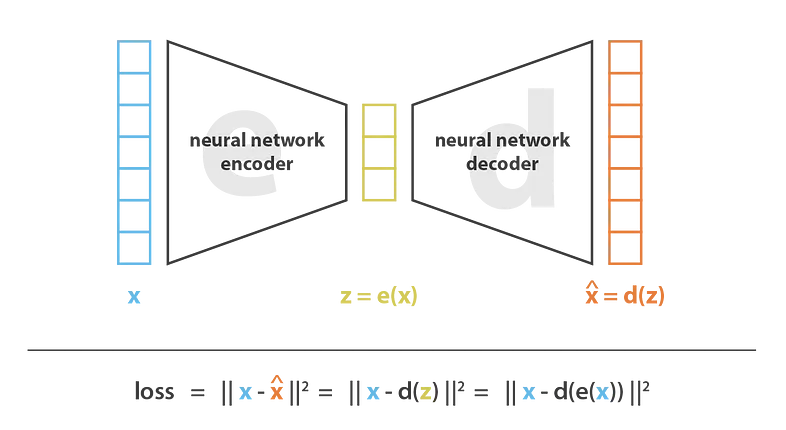
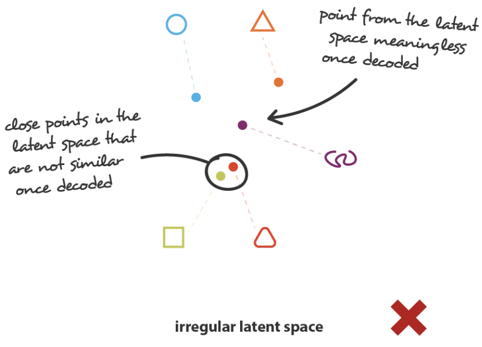
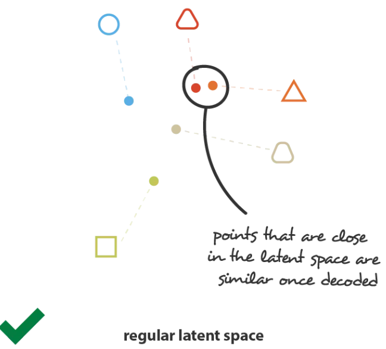
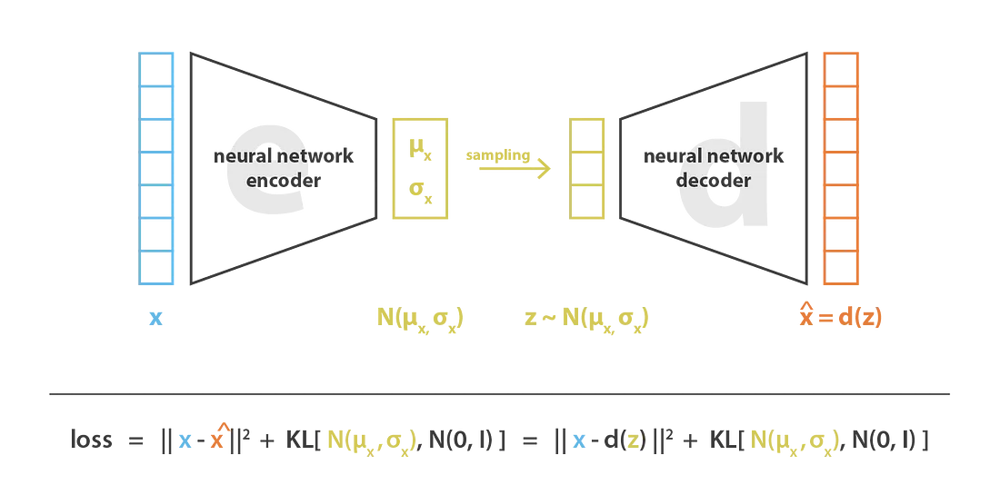
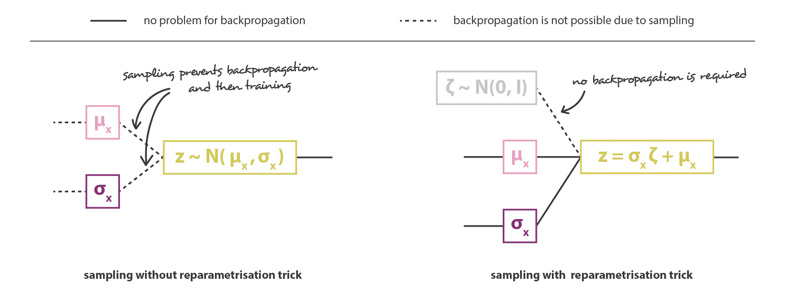
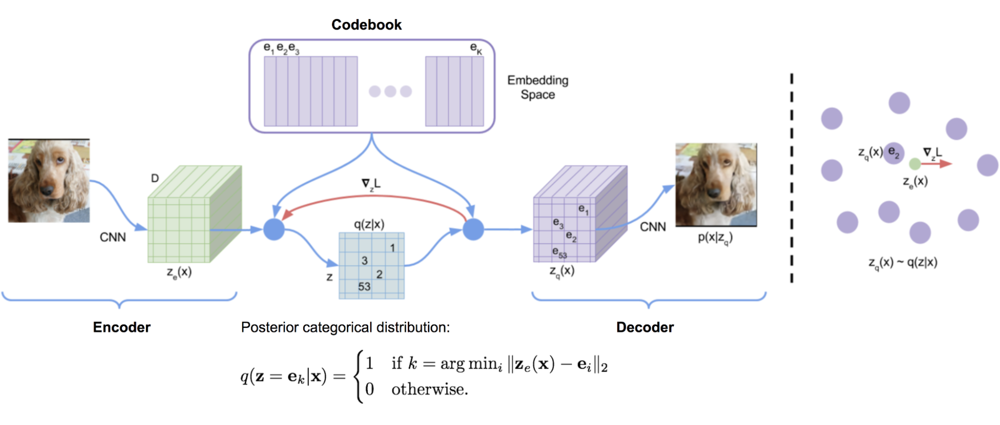

8 Variational Autoencoders (VAEs)
Many of the ideas and illustrations in this section are adapted from Joseph Rocca’s excellent Medium article, Understanding Variational Autoencoders (VAEs) (Rocca 2021).
8.1 From Dimensionality Reduction to Generative Models
The Autoencoder Foundation
Dimensionality Reduction seeks encoder \(e: \mathbb{R}^D \to \mathbb{R}^d\) and decoder \(d: \mathbb{R}^d \to \mathbb{R}^D\) (with \(d \ll D\)) that minimize reconstruction error:
\[(e^*, d^*) = \arg\min_{(e,d) \in \mathcal{E} \times \mathcal{D}} \sum_{x_i \in \mathcal{D}} \|x_i - d(e(x_i))\|^2\]
Linear Case - Principal Component Analysis (PCA):
When encoder and decoder are restricted to linear transformations (no activation functions), the optimal solution is given by Principal Component Analysis:
- Compute covariance matrix \(\Sigma = \frac{1}{N}\sum_i (x_i - \bar{x})(x_i - \bar{x})^\top\)
- Find top \(d\) eigenvectors \(\{v_1, \ldots, v_d\}\) with largest eigenvalues
- Encoder: \(e(x) = V^\top (x - \bar{x})\) where \(V = [v_1, \ldots, v_d]\)
- Decoder: \(d(z) = Vz + \bar{x}\)
Result: PCA provides the optimal \(d\)-dimensional linear subspace minimizing reconstruction error.
Non-Linear Case - Autoencoders:
Replace linear transformations with neural networks:
Training: Minimize reconstruction loss \(\mathcal{L} = \|x - \hat{x}\|^2\) via backpropagation.

Problem for Generation: Latent space is irregular—random samples \(z \sim \mathcal{N}(0, I)\) often produce nonsensical reconstructions.
Desired Properties for Generative Latent Space:
- Continuity: Nearby points in latent space → similar generated outputs
- \(\|z_1 - z_2\| \text{ small} \Rightarrow \|d(z_1) - d(z_2)\| \text{ small}\)
- Completeness: Every point in latent space → meaningful output
- For any \(z\) in relevant region, \(d(z)\) should be a plausible image
Standard Autoencoders Fail: Without regularization, encoder maps data to arbitrary regions, leaving gaps (holes) in latent space.


Variational Autoencoders Solution: Regularize latent space during training to enforce these properties.
8.2 Probabilistic Formulation
Generative Model:
- Sample latent: \(z \sim p(z) = \mathcal{N}(0, I)\)
- Generate data: \(x \sim p_\theta(x|z)\) (learned decoder)
Goal: Maximize likelihood \(p_\theta(x)\) for observed data, which is intractable (it requires \(\int p_\theta(x|z)p(z)dz\))
Solution: Introduce approximate posterior \(q_\phi(z|x)\) (encoder), and
Interpretation:
- Reconstruction: Encourages decoder to reconstruct input accurately (like autoencoder loss)
- KL Regularization: Enforces continuity/completeness keeping \(q_\phi(z|x)\) close to \(p(z) = \mathcal{N}(0,I)\)
Why “Lower Bound”?
Since \(\log p_\theta(x) = \text{ELBO}(\theta, \phi; x) + \text{KL}(q_\phi \| p_\theta(z|x))
\geq \text{ELBO}(\theta, \phi; x)\quad
(\text{ KL} \geq 0)\),
a good encoder (small KL) makes maximizing ELBO ≈ maximizing likelihood
8.3 Architecture and Training
Network Architecture:
- Encoder \(q_\phi(z|x)\) outputs distribution parameters \(\mu\) and \(\sigma\) (not a single point): \[x \;\rightarrow\; \text{CNN} \;\rightarrow\; \text{Flatten} \;\rightarrow\; \text{FC} \;\rightarrow\; [\mu(x), \log \sigma^2(x)] \in \mathbb{R}^d\]
\[q_\phi(z|x) = \mathcal{N}(z; \mu_\phi(x), \sigma_\phi^2(x) I)\]
- Decoder \(p_\theta(x|z)\) reconstructs from latent code: \[p_\theta(x|z) = \mathcal{N}(x; \mu_\theta(z), \sigma^2 I)\]
\[z \;\rightarrow\; \text{FC} \;\rightarrow\; \text{Reshape} \;\rightarrow\; \text{Transposed CNN} \;\rightarrow\; \hat{x} \in \mathbb{R}^D\]
Note: Encoder outputs log-variance to ensure \(\sigma^2 > 0\)
(even if the network outputs negative values for \(\log \sigma^2\), \(\sigma^2 = \exp(\log \sigma^2)\) is still positive).
Decoder is modeled as a Gaussian with fixed variance, making its reconstruction loss equivalent to MSE: \(\log p_\theta(x|z) \propto -\|\hat{x} - x\|^2\).
Loss Function:
Minimize negative ELBO: \[\mathcal{L}_{\text{VAE}} = \underbrace{\|x - \hat{x}\|^2}_{\text{Reconstruction}} + \underbrace{\frac{1}{2}\sum_{j=1}^d \left(\mu_j^2 + \sigma_j^2 - \log \sigma_j^2 - 1\right)}_{\text{KL regularization}}\]
The regularization term is the closed-form for KL-divergence of two gaussians \(\text{KL}(\mathcal{N}(\mu, \sigma^2) \| \mathcal{N}(0, I))\)
The overall structure of the VAE—encoder, sampling, and decoder—and the loss components are illustrated in Figure 8.3 .

Reparameterization Trick:
Problem: Sampling \(z \sim \mathcal{N}(\mu, \sigma^2)\) is not differentiable—cannot backpropagate through random sampling.
Solution: Reparameterize as \(z = \mu(x) + \sigma(x) \odot \epsilon\) where \(\epsilon \sim \mathcal{N}(0, I)\).
- Randomness is in \(\epsilon\) (sampled once, treated as constant).
- Gradients flow through \(\mu(x)\) and \(\sigma(x)\).

Right: Reparameterization moves sampling to fixed \(\epsilon\), allowing gradients to flow through \(\mu\) and \(\sigma\). Adapted from Rocca (Rocca 2021).
Training Algorithm:
for each batch x:
# Encoder: predict distribution parameters
μ, log_σ² = encoder(x)
σ = exp(0.5 * log_σ²)
# Reparameterization trick
ε ~ N(0, I)
z = μ + σ ⊙ ε
# Decoder: reconstruct
x̂ = decoder(z)
# Loss
reconstruction_loss = ||x - x̂||²
kl_loss = 0.5 * sum(μ² + σ² - log σ² - 1)
loss = reconstruction_loss + kl_loss
# Backpropagation
loss.backward()
optimizer.step()Generation Process:
# Sample from prior
z ~ N(0, I)
# Decode
x̂ = decoder(z)No encoder needed at generation time!
8.4 Variants and Extensions
Conditional VAE (CVAE, 2015)
Idea: Condition generation on class label \(y\).
Modification:
- Encoder: \(q_\phi(z|x, y)\) (takes both \(x\) and \(y\) as input)
- Decoder: \(p_\theta(x|z, y)\) (generates \(x\) conditioned on \(z\) and \(y\))
- Prior: \(p(z|y)\) (can be class-specific)
Loss: Same ELBO structure, but conditioned on \(y\):
\[\text{ELBO}(\theta, \phi; x, y) = \mathbb{E}_{q_\phi(z|x,y)}[\log p_\theta(x|z, y)] - \text{KL}(q_\phi(z|x, y) \| p(z|y))\]
Generation: Sample class \(y\), then \(z \sim p(z|y)\), then \(x \sim p_\theta(x|z, y)\).
Application: Generate images of specific classes (e.g., “generate a digit 7”).
β-VAE (2017): Disentangled Representations
Motivation: Standard VAE often learns entangled representations where multiple latent dimensions change together.
Modification: Add weight \(\beta > 1\) to KL term:
\[\text{ELBO}_{\beta\text{-VAE}} = \mathbb{E}_{q_\phi(z|x)}[\log p_\theta(x|z)] - \beta \cdot \text{KL}(q_\phi(z|x) \| p(z))\]
Effect:
- \(\beta > 1\): Stronger regularization → more disentangled (but blurrier reconstructions)
- \(\beta = 1\): Standard VAE
- \(\beta < 1\): Less regularization → sharper reconstructions (but entangled)
Typical values: \(\beta \in [2, 10]\) for disentanglement tasks.
Applications: Interpretable latent factors (e.g., face attributes: pose, lighting, identity separated).
8.5 VQ-VAE: Vector Quantized VAE
Motivation: Standard VAE uses continuous latent space. VQ-VAE uses discrete latent codes (like words in language).
Key Idea: Replace continuous \(z \in \mathbb{R}^d\) with discrete codebook indices.
Architecture:

Codebook: Learnable embedding table \(\mathcal{E} = \{e_1, \ldots, e_K\} \subset \mathbb{R}^d\) with \(K\) vectors (e.g., \(K=512\)).
Encoding
- Encoder outputs spatial feature map: \(E(x) \in \mathbb{R}^{H \times W \times d}\)
Quantization
For each spatial location \((i,j)\), find nearest codebook vector: \[k_{i,j} = \arg\min_l \|E(x)_{i,j} - e_l\|_2\]
Replace with codebook vector: \(z_q(x)_{i,j} = e_{k_{i,j}}\)
Decoding: \(\hat{x} = D(z_q(x))\)
Loss:
\[\mathcal{L} = \underbrace{\|x - D(z_q(x))\|_2^2}_{\text{Reconstruction}} + \underbrace{\|\text{sg}[E(x)] - z_q(x)\|_2^2}_{\text{Codebook (VQ)}} + \underbrace{\beta \|E(x) - \text{sg}[z_q(x)]\|_2^2}_{\text{Commitment}}\]
where \(\text{sg}[\cdot]\) is stop-gradient operator.
Three Loss Terms:
Reconstruction Loss: Updates encoder and decoder (standard autoencoder loss)
Codebook Loss (VQ):Updates the codebook embeddings \(e_k\) to match the encoder outputs they represent.
Commitment Loss: Updates the encoder outputs to stay close to their assigned codebook vectors, stabilizing quantization and preventing the encoder from drifting.
- Weight \(\beta = 0.25\) typically
Alternative - EMA Update (instead of VQ loss):
Update codebook vectors via exponential moving average (like k-means):
\[N_k \leftarrow N_k \cdot \gamma + (1-\gamma) \sum_{i,j} \mathbb{1}[k_{i,j} = k]\] \[e_k \leftarrow \frac{N_k \cdot \gamma \cdot e_k + \sum_{i,j:\, k_{i,j}=k} E(x)_{i,j}}{N_k}\]
Straight-Through Estimator:
Problem: \(\arg\min\) operation (nearest neighbor) is not differentiable.
Solution: In backward pass, copy gradient from decoder input to encoder output: \[\frac{\partial \mathcal{L}}{\partial E(x)} = \frac{\partial \mathcal{L}}{\partial z_q(x)}\]
Intuition: Pretend quantization is identity function during backpropagation.
Advantages of VQ-VAE:
- No posterior collapse: There’s no KL term forcing \(q(z|x)\) toward a standard Normal prior, so the latent codes retain information about \(x\).
- Compatibility with autoregressive models: Prior \(p(z)\) can be learned with PixelCNN/Transformer
- Better codebook utilization: All \(K\) codes typically get used (vs. continuous VAE where some dimensions are ignored)
8.6 VQ-VAE-2: Hierarchical Discrete Latents
Motivation: Single-scale VQ-VAE struggles with both global structure and fine details.
Solution: Hierarchical latent codes at multiple resolutions.
Architecture:
Two-Level Hierarchical Encoder:
- Top-level encoder: \(x \to z_{\text{top}} \in \mathbb{R}^{H/32 \times W/32 \times d}\) (low resolution, global features)
- Bottom-level encoder: \(x \to z_{\text{bottom}} \in \mathbb{R}^{H/16 \times W/16 \times d}\) (high resolution, local features)
Both quantized with separate codebooks (512 vectors each).
Decoder: Takes both quantized representations: \[\hat{x} = D(z_q^{\text{top}}, z_q^{\text{bottom}})\] Top-level quantized (codebook) representations are upsampled to match the spatial resolution of the bottom-level codes and concatenated along the channel dimension.
Two-Stage Training:
Stage 1 - Train VQ-VAE :
Trains the hierarchical encoder–decoder and two codebooks using reconstruction and vq losses.→ The trained model can encode and reconstruct inputs, but cannot yet generate new samples.
Stage 2 - Train Prior Models:
Trains autoregressive models over the discrete latent variables using PixelCNN or Transformers:- Top prior: \(p(z_{\text{top}})\) (unconditional)
- Train autoregressive model on top-level codes
- Bottom prior: \(p(z_{\text{bottom}} | z_{\text{top}})\) (conditional)
- Train autoregressive model on bottom-level codes, conditioned on top codes
→ Sample new data samples by drawing discrete codes from the learned priors, then decoding them through the VQ-VAE decoder (see Generation Process below).
- Top prior: \(p(z_{\text{top}})\) (unconditional)
Generation Process:
# Sample top-level codes autoregressively
z_top ~ p_top # using trained PixelCNN
# Sample bottom-level codes conditioned on top
z_bottom ~ p_bottom(· | z_top) # using conditional PixelCNN
# Decode to image
x = Decoder(z_top, z_bottom)Performance: On ImageNet 256×256
| Model | FID ↓ | IS ↑ |
|---|---|---|
| Progressive GAN | 8.8 | - |
| BigGAN | 6.9 | 224.5 |
| VQ-VAE-2 | 31.1 | 170.0 |
VQ-VAE-2 is outperformed by GANs but provides:
- Better mode coverage (no mode collapse)
- Interpretable discrete latent space
- Foundation for later models (DALL-E uses VQ-VAE)
8.7 Practical Considerations
Architecture Choices:
- Encoder/Decoder Depth: Deeper networks → better features, harder to train
- Start simple: 3-4 conv layers each
- Advanced: ResNet-style blocks
- Latent Dimension: Trade-off between compression and reconstruction
- Too small (\(d < 10\)): Poor reconstructions
- Too large (\(d > 512\)): KL collapse (posterior collapses to prior)
- Typical: \(d \in [32, 256]\)
- KL Annealing: Gradually increase KL weight from 0 to 1 during training
- Prevents early KL collapse
- Allows decoder to learn before enforcing strong regularization
Training Issues:
1. Posterior Collapse: KL term goes to 0, model ignores latent code
- Symptom: Decoder generates always the same output regardless of \(z\)
- Solutions: KL annealing; free bits (minimum KL per dimension, i.e. optimize: \(\max(\text{KL}_j, \lambda)\) instead of \(\text{KL}_j\)); or \(\beta\)-VAE with \(\beta < 1\) initially
2. Blurry Reconstructions: MSE loss averages over modes
- Symptom: Images look blurry compared to input
- Cause: MSE loss \(= \mathbb{E}[\|x - \hat{x}\|^2]\) encourages averaging
- Partial solutions: Perceptual loss (VGG similarity in deep feature space between input \(x\) and reconstruction \(\hat{x}\)); adversarial loss (VAE-GAN hybrid)
3. KL-Reconstruction Trade-off: Balancing two loss terms
- High KL weight → regular latent space but poor reconstructions
- Low KL weight → good reconstructions but irregular latent space
- Solutions: Grid search for optimal weighting; β-VAE
Technical property:
VAEs use continuous latent spaces, allowing smooth interpolation and controllable generation: \[z_{\text{interp}} = (1-\alpha) z_1 + \alpha z_2, \quad \alpha \in [0,1],\] where interpolating between latent codes \(z_1\) and \(z_2\) produces meaningful intermediate output images.
8.8 Summary and Interview Preparation
Core Concepts Checklist:
Mathematical Foundation:
Architecture:
VAE Variants:
Training:
Common Interview Questions:
1. “Derive the VAE loss function (ELBO).”
Answer: Start with log-likelihood: \(\log p(x) = \log \int p(x|z)p(z)dz\)
Introduce \(q(z|x)\): \(= \log \mathbb{E}_{q(z|x)}\left[\frac{p(x|z)p(z)}{q(z|x)}\right]\)
Jensen’s inequality: \(\geq \mathbb{E}_{q(z|x)}\left[\log p(x|z)\right] - \text{KL}(q(z|x)\|p(z))\)
This is ELBO. Maximizing ELBO = maximizing lower bound on likelihood.
2. “Explain the reparameterization trick and why it’s necessary.”
Answer: Problem: Sampling \(z \sim \mathcal{N}(\mu, \sigma^2)\) is not differentiable—can’t backprop through stochastic node.
Solution: Reparameterize as \(z = \mu + \sigma \odot \epsilon\) where \(\epsilon \sim \mathcal{N}(0,I)\).
Now \(\epsilon\) is constant (sampled once), and gradients flow through \(\mu\) and \(\sigma\). Enables end-to-end training with backpropagation.
3. “Why do VAE reconstructions tend to be blurry?”
Answer: Cause: MSE loss \(\mathbb{E}[\|x - \hat{x}\|^2]\) encourages decoder to output mean of conditional distribution \(p(x|z)\).
When \(p(x|z)\) is multimodal (multiple valid reconstructions), mean is blurry average.
Solutions:
- Perceptual loss (VGG features instead of pixels)
- Adversarial loss (VAE-GAN hybrid)
- Better decoder distributions (Mixture of Logistics)
4. “VAE vs. GAN—when to use each?”
Answer:
VAE:
- ✓ Stable training
- ✓ Computable likelihood (useful for anomaly detection)
- ✓ Good mode coverage
- ✓ Fast inference (encoder available)
- ✗ Blurry samples (MSE loss)
GAN:
- ✓ Sharp, high-quality samples
- ✗ Unstable training (mode collapse)
- ✗ No encoder (can’t infer \(z\) from \(x\) easily)
- ✗ No likelihood computation
Use VAE when: Need likelihood, stability, representation learning Use GAN when: Need highest quality samples, don’t need encoder
5. “Explain VQ-VAE and why it’s useful.”
Answer: VQ-VAE uses discrete codebook latents instead of continuous:
- Encoder outputs feature map, each spatial location quantized to nearest codebook vector
- No posterior collapse (discrete codes)
- Compatible with autoregressive priors (learn \(p(z)\) with PixelCNN)
Why useful:
- Foundation for DALL-E (VQ-VAE + GPT generates images)
- Better than continuous for capturing discrete modes
- Used in Stable Diffusion latent space compression
6. “What is posterior collapse in VAEs and how to fix it?”
Answer: Posterior collapse: KL term → 0, \(q(z|x) \approx p(z)\).
Decoder ignores \(z\), generates from marginal \(p(x)\) only.
Causes:
- Decoder too powerful (can model \(p(x)\) without \(z\))
- KL weight too high initially
Solutions:
- KL annealing: Start with low β, gradually increase
- Free bits: Minimum KL per dimension (don’t push below threshold)
- β-VAE with β < 1 initially, then increase
- Weaker decoder: Limit capacity to force latent usage
Company Context:
OpenAI:
- DALL-E uses VQ-VAE for discrete tokens + GPT for prior
- Exploring VAEs for representation learning
Stability AI:
- Stable Diffusion uses VAE encoder/decoder (compress to latent space)
- Diffusion in latent space (not pixel space)
Google/DeepMind:
- VQ-VAE-2 research
- Hierarchical VAEs for video (VideoGPT)
Meta:
- VAE-based compression for videos
- Research on disentangled representations (β-VAE)
Further Reading:
Foundational Papers:
- Auto-Encoding Variational Bayes (VAE, 2013)
- β-VAE: Learning Basic Visual Concepts (2017)
- Neural Discrete Representation Learning (VQ-VAE, 2017)
- Generating Diverse High-Fidelity Images with VQ-VAE-2 (2019)
Tutorials:
This completes Variational Autoencoders—the foundation of latent variable generative modeling, combining efficient inference with structured latent spaces, and serving as the basis for modern approaches like latent diffusion models.